Paper reference
- J. Gonzalez-Gomez, J. G. Victores, A. Valero-Gomez, M. Abderrahim, "Motion Control of Differential Wheeled Robots with Joint Limit Constraints", Proc. of the 2011 IEEE International Conference on Robotics and Biomimetics, Phuket, Thailand, 7-11 Dec, 2011, pp. 596-601
Abstract
The motion of wheeled mobile robots is inherently based on their wheels' rolling capabilities. The assumption is that each wheel can rotate indefinitely, backwards or forward. This is the starting point for all motion control mechanisms of wheeled robots. In this paper, a new motion capability of differential mobile robots with limited wheel rotation capabilities is presented. The robot will be able to travel any distance and change its direction of movement even if its wheels can not rotate within more than a certain range of angles. The proposed solution is based on the bio-inspired controller principles used for modular and legged robots, in which oscillations are generated for achieving motion. A total of two oscillators, one per wheel, are enough to generate well-coordinated rhythms on the wheels to control the robot motion. The kinematics of this new type of mobile robot motion is presented, and the relation between the oscillator's parameters and the trajectory is studied. Experiments with real robots will demonstrate the viability of this new locomotion gait.
Authors
- Juan González-Gómez,
- Juan G. Víctores
- Alberto Valero
- Mohammed Abderrahim
- Oral presentation: Mohamed Abderrahim
Download
Paper
| robio2011_limited_wheels.pdf | Paper, in PDF |
| robio2011-limited-wheels.zip | Paper and figure sources: Lyx, latex, inkscape |
| On-line | Read on-line in Scribd |
Slides
| Robio-limited-wheels-slides.pdf | Slides, in PDF |
| robio-limited-wheels-slides-src.zip | Slides and figure sources. Libre-office and inkscape |
| on-line | Read it on-line in slideshare |
| on-line | Read it on-line in scribd |
Video
|
|


Figures
| 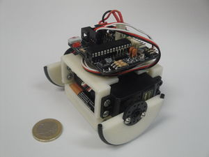 Figure 1: The Miniskybot robot with limited wheels (Click to enlarge) |
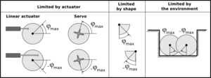 Figure 2: The three types of limited wheels: by actuator, by shape or by the environment (click to enlarge) |
| 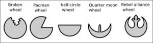 Figure 3: Some examples of wheels limited by the shape (click to enlarge) |
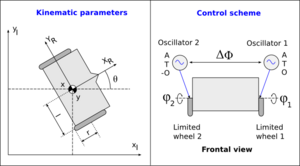 Figure 4: On the left: Kinematic parameters and refernce frames. On the right: control scheme of a differential drive robot with two limited wheels (click to enlarge) |


| 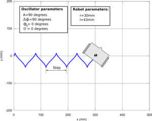 Figure 5: Typical trajectory described by a differential mobile robot with limited wheels constrolled by means of two oscillators (click to enlarge) |
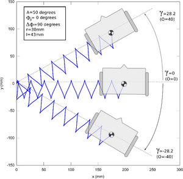 Figure 8: Robot trajectories in three directions (click to enlarge) |


| 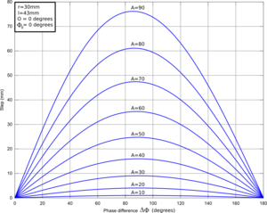 Figure 6: Variation of the step with the phase difference for different amplitudes (click to enlarge) |
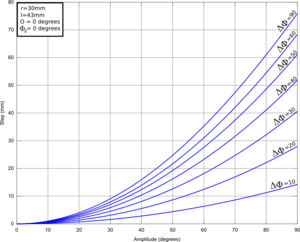 Figure 7: Variation of the step with the amplitude for different phase differences (click to enlarge) |


| 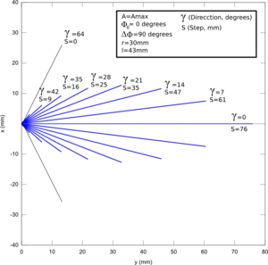 Figure 9: Graphical representation of the step and direction using the maximum amplitude. When gamma is increased, the step is smaller |
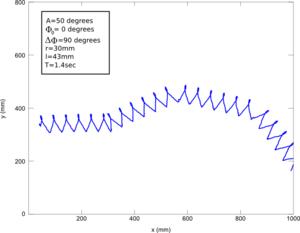 Figure 12: A trajectory performed by the real robot. The robot was tracked and the trajectory recorded on a file |


| 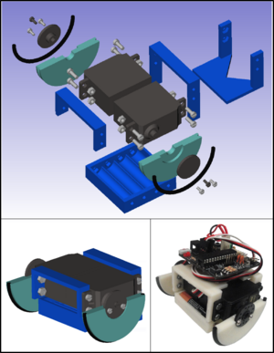 Figure 10: The mobile robot built for the experiments. It is a modified version of the Miniskybot robot with limited wheels |

Links
News
- 2012/April/17th: This page is published!